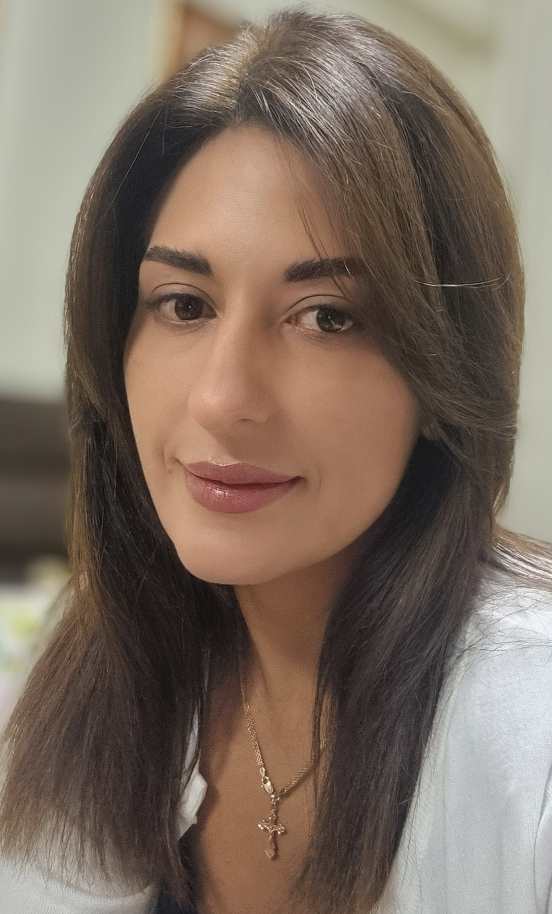

Email address: dashula040407@gmail.com
Date of birth: 29 February 1988
Phone number: +38050-156-81-92
2005-2010 - Kiev Pedagogical University named by B.D. Grinchenka
The Faculty of Philology
Specialist degree in Pedagogy and methods of secondary education. Language and literature (English)
2005-2009 - Moscow State University of Economic, Statistic and Informatic
Faculty of Jurisprudence
Specialist degree in Law
April 2019-present - SkyUp Airlines (civil aviation)
Position: senior flight attendant
Responsibilities: ensuring the safety of passengers and crew on board the aircraft, ensuring communication between passengers and the flight crew, providing services to passengers on board the aircraft.
August 2013-april 2019 - LLC “Ascania Group”
Position: secetary\personal assistant
Responsibilities: organize and coordinate meetings, travel arrangements; prepare and manage correspondence, reports and documents; operate office equipment; organize internal and external events etc.
March 2013-august 2013 - Ukraine International Airlines
Position: flight attendant
Responsibilities: ensuring the safety of passengers and crew on board the aircraft, ensuring communication between passengers and the flight crew, providing services to passengers on board the aircraft.
Juin 2011-march 2013 - AeroSvit Ukrainian Airlines
Position: flight attendant
Responsibilities: ensuring the safety of passengers and crew on board the aircraft, ensuring communication between passengers and the flight crew, providing services to passengers on board the aircraft.
January 2011-june 2011 - TKM LLC
Position: legal adviser
Responsibilities: drafting foreign economic agreements, accreditation of the company with the customs service, legal advice and business correspondence with foreign partners.
Languages: Ukrainian (mother tongue), russian, English(Upper- Intermediate), French(beginner)
Enthusiastic, knowledge-hungry learner, eager to meet challenges and quickly assimilate new concepts; strong researching, writing and problem solving skills